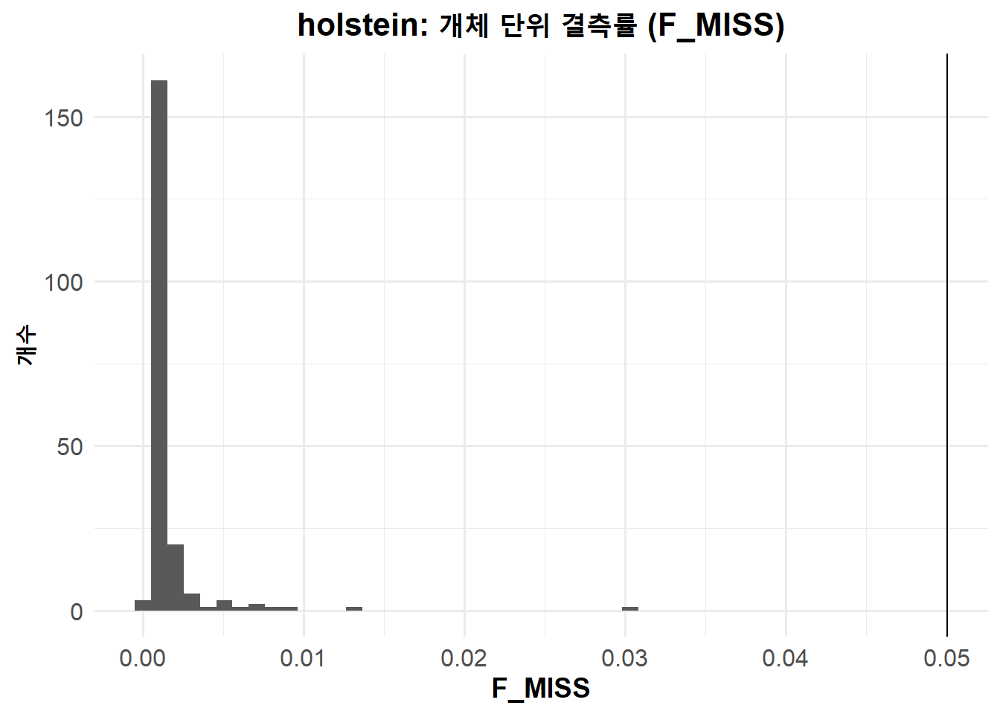
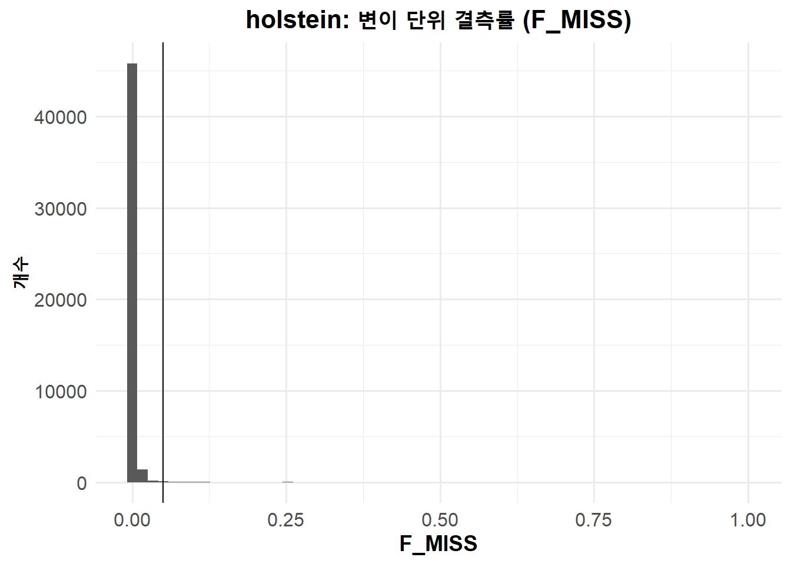
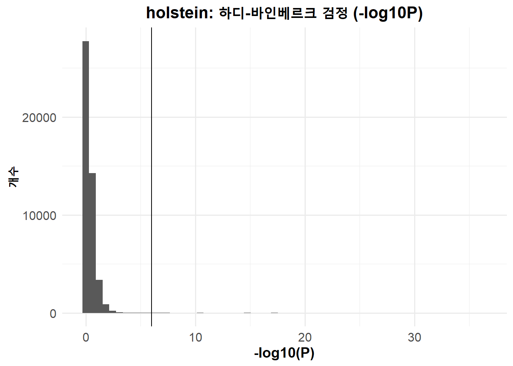
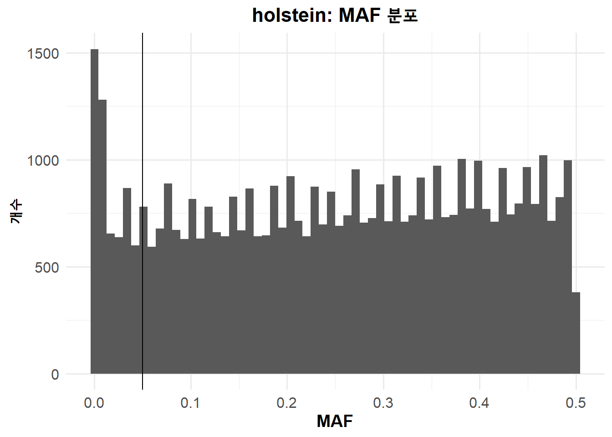
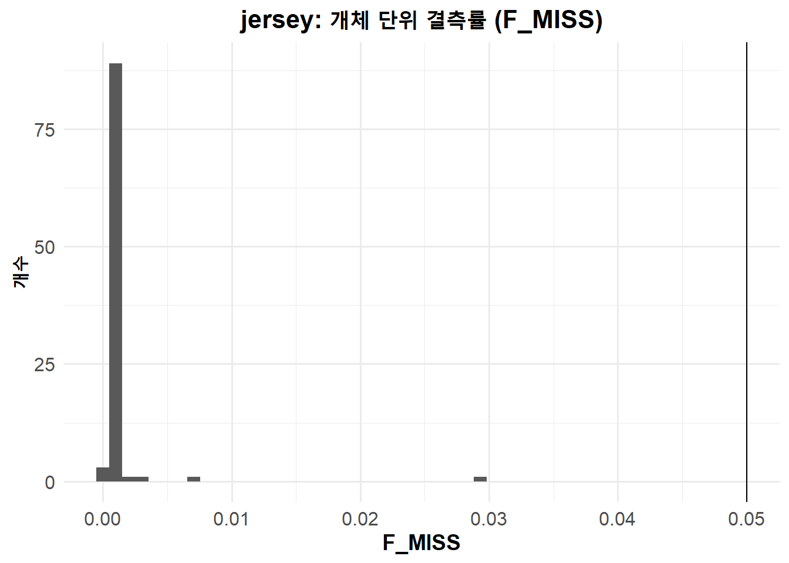
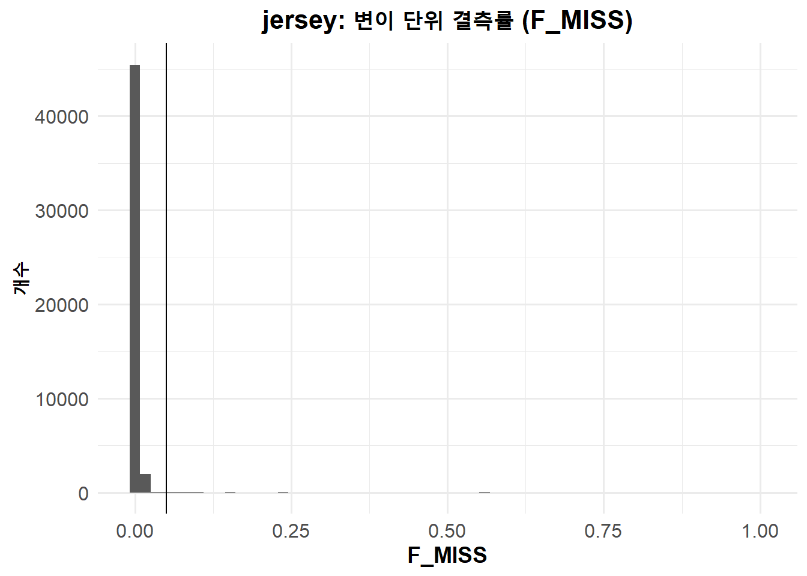
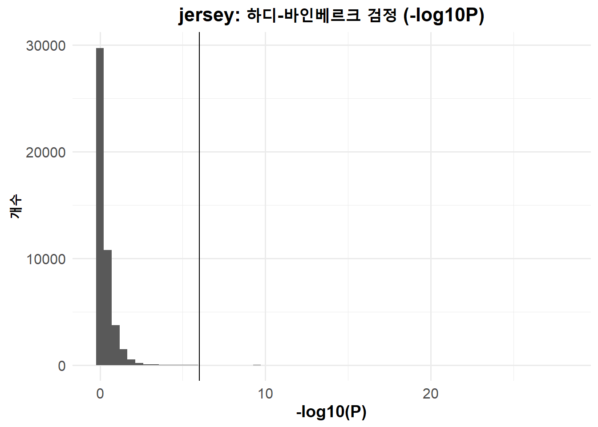
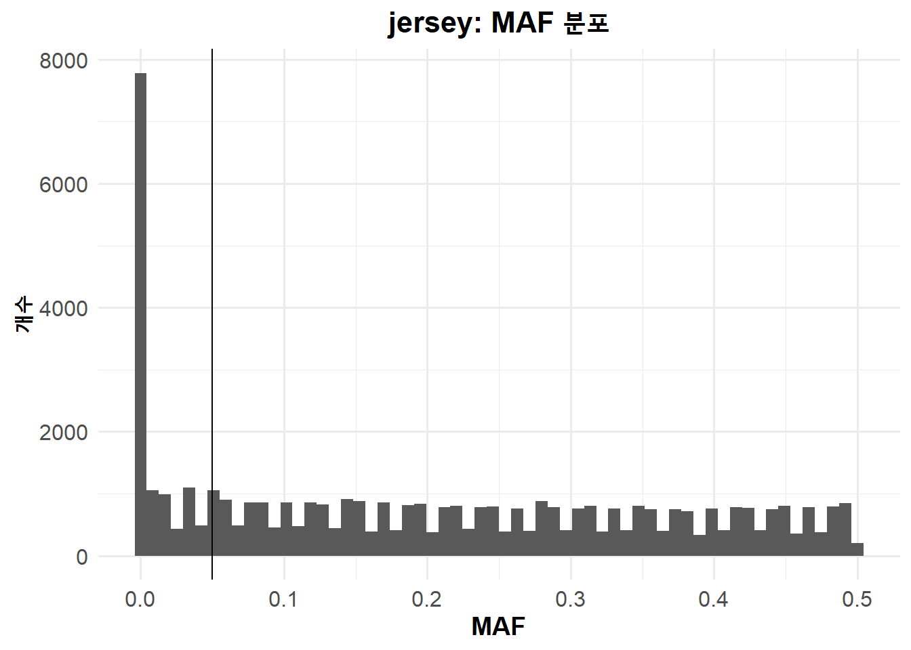

2 Pre-GWAS 절차: 유전자형 데이터 QC
개요📋 GWAS 분석을 위한 유전자형 데이터 QC 워크플로우 (Windows RStudio + PLINK2 + awk)
- 유전자형 데이터 변환 (PED/MAP → PGEN)
- REF/ALT allele 오류 변이 제거
- 1차 필터 적용 (autosomes + X, biallelic, monomorphic 제거, 중복 제거)
- 품종별 IID 목록 준비 및 데이터셋 분리
- 품종별 QC 리포트 생성 (missingness, HWE, allele frequency)
- RStudio에서 품종별 QC 리포트 확인 및 2차 필터 값 결정
- 품종별 2차 필터 적용 및 최종 유전자형 세트 생성 (PLINK1 binary)
2.1 [RStudio Terminal] 전체 유전자형 데이터 QC 워크플로우
아래 단계들은 모두 R 콘솔이 아니라 RStudio의 Terminal 탭에서 실행한다.
- RStudio 화면 하단의 Console 옆 Terminal 탭을 클릭
- Windows에서는
cmd.exe또는PowerShell이 자동 실행되며, Mac/Linux에서는bash/zsh셸이 열림 - 각 단계의 코드 블록 우측 상단의 📋복사 버튼을 눌러 복사한 뒤, Terminal 탭의
>옆에 마우스 오른쪽 버튼을 클릭 한 후 Paste를 클릭하고 Enter를 누르면 실행 - 실행 결과물은 각 단계의 “생성되는 출력 파일” 설명에 따라 확인
2.1.1 0) 결과 저장 디렉터리 준비
작업 전 단계별 결과를 저장할 디렉토리 생성
💻 0) 출력 폴더 생성 (전체 데이터셋)
mkdir 00_import 01_autosomesX 02_reports 03_qc 04_split
생성되는 폴더:
00_import/, 01_autosomesX/, 02_reports/, 03_qc/, 04_split/
2.1.2 1) 원본 PED/MAP을 PLINK2 PGEN 세트로 변환
PLINK1 형식(PED/MAP)을 PLINK2 형식(PGEN/PVAR/PSAM)으로 변환
💻 1) PED/MAP → PGEN 변환 (전체 데이터셋)
plink2 --cow --pedmap NIAS_ibv3_296ea --sort-vars --make-pgen --out 00_import/NIAS_ibv3_296ea
생성되는 출력 파일:
00_import/NIAS_ibv3_296ea.[pgen|pvar|psam]
📄 PLINK2 run log — 👆 클릭하여 보기
PLINK v2.0.0-a.6.21 64-bit (6 Aug 2025)
Options in effect:
--cow
--make-pgen
--out 00_import\NIAS_ibv3_296ea
--pedmap NIAS_ibv3_296ea
--sort-vars
Hostname: haesu
Working directory: G:\Rhome\NIAS_ibv3_296ea\PLINK_120825_0322
Start time: Wed Aug 20 16:53:23 2025
Random number seed: 1755676403
65463 MiB RAM detected; reserving 32731 MiB for main workspace.
Using up to 16 threads (change this with --threads).
--pedmap: 53218 variants in .map file.
--pedmap: 296 samples present, genotypes extracted to
00_import\NIAS_ibv3_296ea-temporary.bed.smaj .
Transposing sample-major .bed to 00_import\NIAS_ibv3_296ea-temporary.pgen , and
setting major alleles to provisional-REF.
Transpose complete.
--pedmap: 00_import\NIAS_ibv3_296ea-temporary.pgen +
00_import\NIAS_ibv3_296ea-temporary.pvar +
00_import\NIAS_ibv3_296ea-temporary.psam written. .bed.smaj and .fam.tmp
temporary files deleted.
296 samples (0 females, 0 males, 296 ambiguous; 296 founders) loaded from
00_import\NIAS_ibv3_296ea-temporary.psam.
53218 variants loaded from 00_import\NIAS_ibv3_296ea-temporary.pvar.
Note: No phenotype data present.
Writing 00_import\NIAS_ibv3_296ea.pvar ... done.
Writing 00_import\NIAS_ibv3_296ea.psam ... done.
Writing 00_import\NIAS_ibv3_296ea.pgen ... done.
End time: Wed Aug 20 16:53:24 2025
2.1.3 2) REF/ALT . 오류 변이 제거
REF 및 ALT allele이 .으로 지정된 변이를 제거한 데이터셋 생성
💻 2-1) REF/ALT가 모두 ‘.’ 인 변이 전체 행 추출 (awk)
awk -F '\t' "NR>1 && $4==\".\" && $5==\".\"" 00_import/NIAS_ibv3_296ea.pvar > bad_refalt_ids_both_strict.txt
생성되는 출력 파일:
bad_refalt_ids_both_strict.txt
📄 bad_refalt_ids_both_strict.txt — 👆 클릭하여 보기
0 0 BTA-91057-no-rs . . 0
2 104844698 ARS-BFGL-NGS-40237 . . 117.9899
3 47820211 BTB-00462798 . . 70.45705
3 86433347 ARS-BFGL-NGS-11769 . . 109.0945
3 120031577 BTB-01714430 . . 126.98
6 108805685 Hapmap39313-BTA-121776 . . 112.8388
13 21528917 ARS-BFGL-NGS-59624 . . 1.695824
15 49076839 ARS-BFGL-BAC-20572 . . 47.92302
15 57434389 ARS-BFGL-BAC-19997 . . 54.28989
19 27444684 ARS-BFGL-NGS-38067 . . 48.69351
23 39274007 BovineHD2300011347 . . 0
X 98185142 ARS-BFGL-NGS-2544 . . 99.77262
Y 0 BovineHD3100000048 . . 0
Y 0 BovineHD3100000210 . . 0
Y 0 BovineHD3100000515 . . 0
Y 0 BovineHD3100000517 . . 0
Y 0 BovineHD3100001404 . . 0
💻 2-2) 문제 변이의 ID만 추출 (awk)
awk -F '\t' "NR>1 && $4==\".\" && $5==\".\" {print $3}" 00_import/NIAS_ibv3_296ea.pvar > bad_refalt_ids.txt
생성되는 출력 파일:
bad_refalt_ids.txt
📄 bad_refalt_ids.txt — 👆 클릭하여 보기
BTA-91057-no-rs
ARS-BFGL-NGS-40237
BTB-00462798
ARS-BFGL-NGS-11769
BTB-01714430
Hapmap39313-BTA-121776
ARS-BFGL-NGS-59624
ARS-BFGL-BAC-20572
ARS-BFGL-BAC-19997
ARS-BFGL-NGS-38067
BovineHD2300011347
ARS-BFGL-NGS-2544
BovineHD3100000048
BovineHD3100000210
BovineHD3100000515
BovineHD3100000517
BovineHD3100001404
💻 2-3) 문제 변이를 제외한 pfile 생성 (전체 데이터셋)
plink2 --pfile 00_import/NIAS_ibv3_296ea --exclude bad_refalt_ids.txt --make-pgen --out 00_import/NIAS_ibv3_296ea.clean
생성되는 출력 파일:
00_import/NIAS_ibv3_296ea.clean.[pgen|pvar|psam]
📄 PLINK2 run log — 👆 클릭하여 보기
PLINK v2.0.0-a.6.21 64-bit (6 Aug 2025)
Options in effect:
--exclude bad_refalt_ids.txt
--make-pgen
--out 00_import/NIAS_ibv3_296ea.clean
--pfile 00_import/NIAS_ibv3_296ea
Hostname: haesu
Working directory: G:\Rhome\NIAS_ibv3_296ea\PLINK_120825_0322
Start time: Wed Aug 20 16:53:24 2025
Random number seed: 1755676404
65463 MiB RAM detected; reserving 32731 MiB for main workspace.
Using up to 16 threads (change this with --threads).
296 samples (0 females, 0 males, 296 ambiguous; 296 founders) loaded from
00_import/NIAS_ibv3_296ea.psam.
chrSet header line: 29 autosome pairs.
53218 variants loaded from 00_import/NIAS_ibv3_296ea.pvar.
Note: No phenotype data present.
--exclude: 53201 variants remaining.
53201 variants remaining after main filters.
Writing 00_import/NIAS_ibv3_296ea.clean.psam ... done.
Writing 00_import/NIAS_ibv3_296ea.clean.pvar ... done.
Writing 00_import/NIAS_ibv3_296ea.clean.pgen ... done.
End time: Wed Aug 20 16:53:25 2025
2.1.4 3) 1차 필터 적용
Autosomes + X 염색체만 남기고, 다대립성/단일형/중복 변이 제거
💻 3) Autosomes + X, biallelic only, no monomorphic or duplicate variants (전체 데이터셋)
plink2 --pfile 00_import/NIAS_ibv3_296ea.clean --chr 1-29,X --max-alleles 2 --mac 1 --rm-dup force-first --sort-vars --make-pgen --out 01_autosomesX/NIAS_ibv3_296ea.autosomesX
생성되는 출력 파일:
01_autosomesX/NIAS_ibv3_296ea.autosomesX.[pgen|pvar|psam]
📄 PLINK2 run log — 👆 클릭하여 보기
PLINK v2.0.0-a.6.21 64-bit (6 Aug 2025)
Options in effect:
--chr 1-29,X
--mac 1
--make-pgen
--max-alleles 2
--out 01_autosomesX/NIAS_ibv3_296ea.autosomesX
--pfile 00_import/NIAS_ibv3_296ea.clean
--rm-dup force-first
--sort-vars
Hostname: haesu
Working directory: G:\Rhome\NIAS_ibv3_296ea\PLINK_120825_0322
Start time: Wed Aug 20 16:53:25 2025
Random number seed: 1755676405
65463 MiB RAM detected; reserving 32731 MiB for main workspace.
Using up to 16 threads (change this with --threads).
296 samples (0 females, 0 males, 296 ambiguous; 296 founders) loaded from
00_import/NIAS_ibv3_296ea.clean.psam.
chrSet header line: 29 autosome pairs.
52424 out of 53201 variants loaded from 00_import/NIAS_ibv3_296ea.clean.pvar.
Note: No phenotype data present.
Note: Skipping --rm-dup since no duplicate IDs are present.
Calculating allele frequencies... done.
4848 variants removed due to allele frequency threshold(s)
(--maf/--max-maf/--mac/--max-mac).
47576 variants remaining after main filters.
Writing 01_autosomesX/NIAS_ibv3_296ea.autosomesX.pvar ... done.
Writing 01_autosomesX/NIAS_ibv3_296ea.autosomesX.psam ... done.
Writing 01_autosomesX/NIAS_ibv3_296ea.autosomesX.pgen ... done.
End time: Wed Aug 20 16:53:25 2025
2.1.5 4) 품종별 IID 목록 준비
Holstein / Jersey 개체 ID 파일을 FID IID 목록으로 매칭(PSAM 기반)
🐄 4-1) Holstein (홀스타인) IID 변환
awk "NR==FNR {iid[$1]=1; next} FNR>1 && ($2 in iid) {print $1, $2}" holstein.txt 01_autosomesX/NIAS_ibv3_296ea.autosomesX.psam > holstein_ids.txt
생성되는 출력 파일:
holstein_ids.txt
📄 holstein_ids.txt — 👆 클릭하여 보기
1 3530
2 3528
3 3527
4 3195
5 3994
...
195 4354
196 4353
197 4352
198 4163
199 4351
200 4279
🐂 4-2) Jersey (저지) IID 변환
awk "NR==FNR {iid[$1]=1; next} FNR>1 && ($2 in iid) {print $1, $2}" jersey.txt 01_autosomesX/NIAS_ibv3_296ea.autosomesX.psam > jersey_ids.txt
생성되는 출력 파일:
jersey_ids.txt
📄 jersey_ids.txt — 👆 클릭하여 보기
201 4273
202 4284
203 4289
204 4230
205 4292
...
292 4318
293 4317
294 4096
295 4179
296 4316
2.1.6 5) 품종별 서브셋 pfile 생성
품종별 IID 목록을 기반으로 데이터셋 분리
🐄 5-1) Holstein (홀스타인) 서브셋
plink2 --pfile 01_autosomesX/NIAS_ibv3_296ea.autosomesX --keep holstein_ids.txt --make-pgen --out 04_split/NIAS_ibv3_296ea.holstein
생성되는 출력 파일:
04_split/NIAS_ibv3_296ea.holstein.[pgen|pvar|psam]
📄 PLINK2 run log — 👆 클릭하여 보기
PLINK v2.0.0-a.6.21 64-bit (6 Aug 2025)
Options in effect:
--keep holstein_ids.txt
--make-pgen
--out 04_split/NIAS_ibv3_296ea.holstein
--pfile 01_autosomesX/NIAS_ibv3_296ea.autosomesX
Hostname: haesu
Working directory: G:\Rhome\NIAS_ibv3_296ea\PLINK_120825_0322
Start time: Wed Aug 20 16:53:26 2025
Random number seed: 1755676406
65463 MiB RAM detected; reserving 32731 MiB for main workspace.
Using up to 16 threads (change this with --threads).
296 samples (0 females, 0 males, 296 ambiguous; 296 founders) loaded from
01_autosomesX/NIAS_ibv3_296ea.autosomesX.psam.
chrSet header line: 29 autosome pairs.
47576 variants loaded from 01_autosomesX/NIAS_ibv3_296ea.autosomesX.pvar.
Note: No phenotype data present.
--keep: 200 samples remaining.
200 samples (0 females, 0 males, 200 ambiguous; 200 founders) remaining after
main filters.
Writing 04_split/NIAS_ibv3_296ea.holstein.psam ... done.
Writing 04_split/NIAS_ibv3_296ea.holstein.pvar ... done.
Writing 04_split/NIAS_ibv3_296ea.holstein.pgen ... done.
End time: Wed Aug 20 16:53:26 2025
🐂 5-2) Jersey (저지) 서브셋
plink2 --pfile 01_autosomesX/NIAS_ibv3_296ea.autosomesX --keep jersey_ids.txt --make-pgen --out 04_split/NIAS_ibv3_296ea.jersey
생성되는 출력 파일:
04_split/NIAS_ibv3_296ea.jersey.[pgen|pvar|psam]
📄 PLINK2 run log — 👆 클릭하여 보기
PLINK v2.0.0-a.6.21 64-bit (6 Aug 2025)
Options in effect:
--keep jersey_ids.txt
--make-pgen
--out 04_split/NIAS_ibv3_296ea.jersey
--pfile 01_autosomesX/NIAS_ibv3_296ea.autosomesX
Hostname: haesu
Working directory: G:\Rhome\NIAS_ibv3_296ea\PLINK_120825_0322
Start time: Wed Aug 20 16:53:26 2025
Random number seed: 1755676406
65463 MiB RAM detected; reserving 32731 MiB for main workspace.
Using up to 16 threads (change this with --threads).
296 samples (0 females, 0 males, 296 ambiguous; 296 founders) loaded from
01_autosomesX/NIAS_ibv3_296ea.autosomesX.psam.
chrSet header line: 29 autosome pairs.
47576 variants loaded from 01_autosomesX/NIAS_ibv3_296ea.autosomesX.pvar.
Note: No phenotype data present.
--keep: 96 samples remaining.
96 samples (0 females, 0 males, 96 ambiguous; 96 founders) remaining after main
filters.
Writing 04_split/NIAS_ibv3_296ea.jersey.psam ... done.
Writing 04_split/NIAS_ibv3_296ea.jersey.pvar ... done.
Writing 04_split/NIAS_ibv3_296ea.jersey.pgen ... done.
End time: Wed Aug 20 16:53:26 2025
2.1.7 6) 2차 필터 적용 및 최종 데이터셋 생성
통용되는 QC 기준값을 적용하여 최종 PLINK1 binary 파일 생성
- mind = 0.05, geno = 0.05, hwe = 1e-6, maf = 0.05
🐄 6-1) Holstein (홀스타인)
plink2 --pfile 04_split/NIAS_ibv3_296ea.holstein --mind 0.05 --geno 0.05 --maf 0.05 --hwe 1e-6 --make-bed --out 03_qc/NIAS_ibv3_296ea.holstein
생성되는 출력 파일:
03_qc/NIAS_ibv3_296ea.holstein.[bed|bim|fam]
📄 PLINK2 run log — 👆 클릭하여 보기
PLINK v2.0.0-a.6.21 64-bit (6 Aug 2025)
Options in effect:
--geno 0.05
--hwe 1e-6
--maf 0.05
--make-bed
--mind 0.05
--out 03_qc/NIAS_ibv3_296ea.holstein
--pfile 04_split/NIAS_ibv3_296ea.holstein
Hostname: haesu
Working directory: G:\Rhome\NIAS_ibv3_296ea\PLINK_120825_0322
Start time: Mon Aug 25 19:11:34 2025
Random number seed: 1756116694
65463 MiB RAM detected; reserving 32731 MiB for main workspace.
Using up to 16 threads (change this with --threads).
200 samples (0 females, 0 males, 200 ambiguous; 200 founders) loaded from
04_split/NIAS_ibv3_296ea.holstein.psam.
chrSet header line: 29 autosome pairs.
47576 variants loaded from 04_split/NIAS_ibv3_296ea.holstein.pvar.
Note: No phenotype data present.
Calculating sample missingness rates... done.
0 samples removed due to missing genotype data (--mind).
200 samples (0 females, 0 males, 200 ambiguous; 200 founders) remaining after
main filters.
Calculating allele frequencies... done.
--geno: 193 variants removed due to missing genotype data.
--hwe: 37 variants removed due to Hardy-Weinberg exact test (founders only).
5732 variants removed due to allele frequency threshold(s)
(--maf/--max-maf/--mac/--max-mac).
41614 variants remaining after main filters.
Writing 03_qc/NIAS_ibv3_296ea.holstein.fam ... done.
Writing 03_qc/NIAS_ibv3_296ea.holstein.bim ... done.
Writing 03_qc/NIAS_ibv3_296ea.holstein.bed ... done.
End time: Mon Aug 25 19:11:34 2025
🐂 6-2) Jersey (저지)
plink2 --pfile 04_split/NIAS_ibv3_296ea.jersey --mind 0.05 --geno 0.05 --maf 0.05 --hwe 1e-6 --make-bed --out 03_qc/NIAS_ibv3_296ea.jersey
생성되는 출력 파일:
03_qc/NIAS_ibv3_296ea.jersey.[bed|bim|fam]
📄 PLINK2 run log — 👆 클릭하여 보기
PLINK v2.0.0-a.6.21 64-bit (6 Aug 2025)
Options in effect:
--geno 0.05
--hwe 1e-6
--maf 0.05
--make-bed
--mind 0.05
--out 03_qc/NIAS_ibv3_296ea.jersey
--pfile 04_split/NIAS_ibv3_296ea.jersey
Hostname: RDA
Working directory: G:\Rhome\NIAS_ibv3_296ea\PLINK_120825_0322
Start time: Mon Aug 25 19:11:40 2025
Random number seed: 1756116700
65463 MiB RAM detected; reserving 32731 MiB for main workspace.
Using up to 16 threads (change this with --threads).
96 samples (0 females, 0 males, 96 ambiguous; 96 founders) loaded from
04_split/NIAS_ibv3_296ea.jersey.psam.
chrSet header line: 29 autosome pairs.
47576 variants loaded from 04_split/NIAS_ibv3_296ea.jersey.pvar.
Note: No phenotype data present.
Calculating sample missingness rates... done.
0 samples removed due to missing genotype data (--mind).
96 samples (0 females, 0 males, 96 ambiguous; 96 founders) remaining after main
filters.
Calculating allele frequencies... done.
--geno: 154 variants removed due to missing genotype data.
--hwe: 18 variants removed due to Hardy-Weinberg exact test (founders only).
12329 variants removed due to allele frequency threshold(s)
(--maf/--max-maf/--mac/--max-mac).
35075 variants remaining after main filters.
Writing 03_qc/NIAS_ibv3_296ea.jersey.fam ... done.
Writing 03_qc/NIAS_ibv3_296ea.jersey.bim ... done.
Writing 03_qc/NIAS_ibv3_296ea.jersey.bed ... done.
End time: Mon Aug 25 19:11:40 2025
📁 최종 PLINK1 Binary 세트 한눈에 보기
-
.bed— Binary genotype file - 각 SNP × 개체의 유전자형 정보를 이진(binary) 형태로 저장 (압축 효율적).
-
.bim— Variant information - 각 변이의 염색체, SNP ID, 위치, 대립유전자(ref/alt) 정보를 포함.
-
.fam— Sample information - 각 개체의 FID/IID, 부·모 ID, 성별, phenotype(형질) 정보를 저장.
2.2 품종별 QC 리포트 활용 2차 필터 기준값 정하기
ℹ️ 품종별 PLINK2 QC 리포트 만들기 및 리뷰:
-
PLINK2 QC 보고서(
.smiss,.vmiss,.hardy,.afreq) 생성 - RStudio로 QC 보고서 파일 불러오기 및 미리보기
- 샘플별/SNP별 유전자형 결측률(missingness), 하디–바인베르크 평형(HWE), 소수 대립유전자 빈도(MAF)를 품종별로 시각화
- 기준미달 샘플 및 변이 정보 CSV 작성 및 기준 미달 SNP에 대한 통합 요약 생성
2.2.1 1) [RStudio Terminal] 품종별 QC 리포트 출력
🐄 Holstein (홀스타인)
plink2 --pfile 04_split/NIAS_ibv3_296ea.holstein --missing --hardy --freq --out 02_reports/holstein/NIAS_ibv3_296ea.holstein.autosomesX
생성되는 출력 파일:
02_reports/holstein/NIAS_ibv3_296ea.holstein.autosomesX.[smiss|vmiss|hardy|afreq]
📄 PLINK2 run log — 👆 클릭하여 보기
PLINK v2.0.0-a.6.21 64-bit (6 Aug 2025)
Options in effect:
--freq
--hardy
--missing
--out 02_reports\holstein\NIAS_ibv3_296ea.holstein.autosomesX
--pfile 04_split\NIAS_ibv3_296ea.holstein
Hostname: haesu
Working directory: G:\Rhome\NIAS_ibv3_296ea\PLINK_120825_0322
Start time: Wed Aug 20 16:53:27 2025
Random number seed: 1755676407
65463 MiB RAM detected; reserving 32731 MiB for main workspace.
Using up to 16 threads (change this with --threads).
200 samples (0 females, 0 males, 200 ambiguous; 200 founders) loaded from
04_split\NIAS_ibv3_296ea.holstein.psam.
chrSet header line: 29 autosome pairs.
47576 variants loaded from 04_split\NIAS_ibv3_296ea.holstein.pvar.
Note: No phenotype data present.
Calculating sample missingness rates... done.
Calculating allele frequencies... done.
--freq: Allele frequencies (founders only) written to
02_reports\holstein\NIAS_ibv3_296ea.holstein.autosomesX.afreq .
--missing: Sample missing data report written to
02_reports\holstein\NIAS_ibv3_296ea.holstein.autosomesX.smiss .
--missing: Variant missing data report written to
02_reports\holstein\NIAS_ibv3_296ea.holstein.autosomesX.vmiss .
--hardy: Skipping 887 haploid variants.
--hardy: Autosomal Hardy-Weinberg report (founders only) written to
02_reports\holstein\NIAS_ibv3_296ea.holstein.autosomesX.hardy .
End time: Wed Aug 20 16:53:27 2025
🐂 Jersey (저지)
plink2 --pfile 04_split/NIAS_ibv3_296ea.jersey --missing --hardy --freq --out 02_reports/jersey/NIAS_ibv3_296ea.jersey.autosomesX
생성되는 출력 파일:
02_reports/jersey/NIAS_ibv3_296ea.jersey.autosomesX.[smiss|vmiss|hardy|afreq]
📄 PLINK2 run log — 👆 클릭하여 보기
PLINK v2.0.0-a.6.21 64-bit (6 Aug 2025)
Options in effect:
--freq
--hardy
--missing
--out 02_reports\jersey\NIAS_ibv3_296ea.jersey.autosomesX
--pfile 04_split\NIAS_ibv3_296ea.jersey
Hostname: haesu
Working directory: G:\Rhome\NIAS_ibv3_296ea\PLINK_120825_0322
Start time: Wed Aug 20 16:53:27 2025
Random number seed: 1755676407
65463 MiB RAM detected; reserving 32731 MiB for main workspace.
Using up to 16 threads (change this with --threads).
96 samples (0 females, 0 males, 96 ambiguous; 96 founders) loaded from
04_split\NIAS_ibv3_296ea.jersey.psam.
chrSet header line: 29 autosome pairs.
47576 variants loaded from 04_split\NIAS_ibv3_296ea.jersey.pvar.
Note: No phenotype data present.
Calculating sample missingness rates... done.
Calculating allele frequencies... done.
--freq: Allele frequencies (founders only) written to
02_reports\jersey\NIAS_ibv3_296ea.jersey.autosomesX.afreq .
--missing: Sample missing data report written to
02_reports\jersey\NIAS_ibv3_296ea.jersey.autosomesX.smiss .
--missing: Variant missing data report written to
02_reports\jersey\NIAS_ibv3_296ea.jersey.autosomesX.vmiss .
--hardy: Skipping 887 haploid variants.
--hardy: Autosomal Hardy-Weinberg report (founders only) written to
02_reports\jersey\NIAS_ibv3_296ea.jersey.autosomesX.hardy .
End time: Wed Aug 20 16:53:28 2025
⚙️ 사용된 PLINK2 인자(arguments)
-
--pfile PREFIX -
PGEN 데이터셋 불러오기 (
PREFIX.pgen/pvar/psam). -
--missing -
유전자형 결측 비율 계산 (
.smiss및.vmiss파일 생성). -
--hardy -
하디–바인베르크 exact test 검정 실행 (상염색체 →
.hardy, X 염색체 →.hardy.x). -
--freq -
대립유전자 빈도 계산 (
.afreq파일 생성). -
--out PREFIX - 출력 경로/접두어 지정 (디렉터리는 미리 존재해야 함).
📁 PLINK2 QC 리포트 한눈에 보기
-
.smiss— 샘플 결측률 -
개체별 유전자형 미호출 비율 (
F_MISSby sample). -
.vmiss— 변이 결측률 -
변이별 유전자형 미호출 비율 (전체 샘플 기준,
F_MISSby SNP). -
.hardy/.hardy.x— 하디–바인베르크 평형 검정 - Hardy–Weinberg exact test 검정 P값 (상염색체 / X 염색체).
-
.afreq— 대립유전자 빈도 -
변이별 대체(ALT) 대립유전자 빈도 (
.pvar파일의 대립유전자 사용; ALT는 소수 대립유전자(minor allele)가 아닐 수 있어서 빈도가 0.5 이상일 수도 있음).
2.2.2 2) [RStudio Console] 설정
# 품종별 기본 QC 보고서
# ---------------------------------------------------
# ---- 필요한 패키지 설치 및 불러오기----
need <- c("readr","dplyr","ggplot2")
to_install <- setdiff(need, rownames(installed.packages()))
if (length(to_install)) install.packages(to_install, repos = "https://cloud.r-project.org")
invisible(lapply(need, library, character.only = TRUE))
# ---- 보조 함수 & 기준값(=필터링 기준) ----
neglog10 <- function(p) -log10(pmax(p, .Machine$double.xmin)) # -Inf 방지
# 이대립성(biallelic) 데이터의 MAF: ALT_FREQS 사용
# plink2 --freq의 ALT는 기본적으로 비참조 대립유전자(.pvar 파일에서 정의된 ALT)이며, 소수 대립유전자(minor allele)가 아닐 수도 있음.
maf_from_afreq <- function(df) {
stopifnot("ALT_FREQS" %in% names(df))
df %>%
mutate(
# 숫자형으로 변환 후 [0,1] 범위로 보정
ALT_FREQS = suppressWarnings(as.numeric(ALT_FREQS)),
ALT_FREQS = pmin(pmax(ALT_FREQS, 0), 1),
MAF_calc = pmin(ALT_FREQS, 1 - ALT_FREQS)
)
}
# ---- 기준값 (필요 시 조정) ----
mind_thr <- 0.05 # 개체 단위 유전자형 결측률
geno_thr <- 0.05 # 변이 단위 유전자형 결측률
hwe_thr <- 1e-6 # 하디–바인베르크(HWE) p-값
maf_thr <- 0.05 # 소수 대립유전자 빈도(MAF)
# ---- 기본 경로 & 품종 구분(서브디렉토리 설정용) ----
base_dir <- "02_reports"
breeds <- c("holstein","jersey")🔧 실행 파라미터 — 👆클릭하여 보기
| 기본 디렉터리 (base_dir) |
02_reports
|
| 품종 목록 (breeds) |
holstein, jersey
|
| 개체 단위 결측률 기준 (mind_thr) |
0.05
|
| 변이 단위 결측률 기준 (geno_thr) |
0.05
|
| HWE p-값 기준 (hwe_thr) |
1e-06
|
| MAF 기준 (maf_thr) |
0.05
|
2.2.3 3) [RStudio Console] 품종별 QC 리포트 점검
# 품종별 요약 행을 저장할 리스트
summary_rows <- list()
# ---- 품종별 실행 ----
# 전체 품종(breeds 벡터: "holstein", "jersey")을 순차적으로 처리한다.
# - breeds[1] = "holstein"
# - breeds[2] = "jersey"
# 아래 for 루프에서 자동으로 두 품종이 반복 실행된다.
# ---- 모든 품종 자동 실행 ----
for (breed in breeds) {
message("=== 품종 처리 중: ", breed, " ===")
prefix <- file.path(base_dir, breed, sprintf("NIAS_ibv3_296ea.%s.autosomesX", breed))
f_smiss <- paste0(prefix, ".smiss")
f_vmiss <- paste0(prefix, ".vmiss")
f_hardy <- paste0(prefix, ".hardy")
f_afreq <- paste0(prefix, ".afreq")
out_dir <- file.path(base_dir, breed)
figs_dir <- file.path(out_dir, "figs")
dir.create(figs_dir, showWarnings = FALSE, recursive = TRUE)
# ---- 데이터 불러오기 ----
smiss <- readr::read_tsv(f_smiss, show_col_types = FALSE) |>
dplyr::rename(FID = `#FID`) # "#FID" -> FID
vmiss <- readr::read_tsv(f_vmiss, show_col_types = FALSE) |>
dplyr::rename(CHROM = `#CHROM`)
hardy <- readr::read_tsv(f_hardy, show_col_types = FALSE) |>
dplyr::rename(CHROM = `#CHROM`) |>
dplyr::mutate(minuslog10P = neglog10(P))
afreq <- readr::read_tsv(f_afreq, show_col_types = FALSE) |>
dplyr::rename(CHROM = `#CHROM`) |>
maf_from_afreq()
message("smiss 데이터 앞부분:"); print(utils::head(smiss))
message("vmiss 데이터 앞부분:"); print(utils::head(vmiss))
message("hardy 데이터 앞부분:"); print(utils::head(hardy))
message("afreq 데이터 앞부분:"); print(utils::head(afreq))
# ---- 그래프 ----
qc_theme <- ggplot2::theme_minimal(base_size = 12) +
ggplot2::theme(
axis.title.x = ggplot2::element_text(size = 14, face = "bold"),
axis.title.y = ggplot2::element_text(size = 14, face = "bold"),
axis.text.x = ggplot2::element_text(size = 12),
axis.text.y = ggplot2::element_text(size = 12),
plot.title = ggplot2::element_text(size = 16, face = "bold", hjust = 0.5)
)
p1 <- ggplot2::ggplot(smiss, ggplot2::aes(x = F_MISS)) +
ggplot2::geom_histogram(bins = 50) +
ggplot2::geom_vline(xintercept = mind_thr) +
ggplot2::labs(title = paste0(breed, ": 개체 단위 결측률 (F_MISS)"),
x = "F_MISS", y = "개수") + qc_theme
p2 <- ggplot2::ggplot(vmiss, ggplot2::aes(x = F_MISS)) +
ggplot2::geom_histogram(bins = 60) +
ggplot2::geom_vline(xintercept = geno_thr) +
ggplot2::labs(title = paste0(breed, ": 변이 단위 결측률 (F_MISS)"),
x = "F_MISS", y = "개수") + qc_theme
p3 <- ggplot2::ggplot(hardy, ggplot2::aes(x = minuslog10P)) +
ggplot2::geom_histogram(bins = 60) +
ggplot2::geom_vline(xintercept = -log10(hwe_thr)) +
ggplot2::labs(title = paste0(breed, ": 하디-바인베르크 검정 (-log10P)"),
x = "-log10(P)", y = "개수") + qc_theme
p4 <- ggplot2::ggplot(afreq, ggplot2::aes(x = MAF_calc)) +
ggplot2::geom_histogram(bins = 60) +
ggplot2::geom_vline(xintercept = maf_thr) +
ggplot2::labs(title = paste0(breed, ": MAF 분포"),
x = "MAF", y = "개수") + qc_theme
print(p1); print(p2); print(p3); print(p4)
ggplot2::ggsave(file.path(figs_dir, "smiss_hist.png"), p1, width = 3, height = 3, dpi = 300)
ggplot2::ggsave(file.path(figs_dir, "vmiss_hist.png"), p2, width = 3, height = 3, dpi = 300)
ggplot2::ggsave(file.path(figs_dir, "hardy_hist.png"), p3, width = 3, height = 3, dpi = 300)
ggplot2::ggsave(file.path(figs_dir, "maf_hist.png"), p4, width = 3, height = 3, dpi = 300)
# ---- 이상치(outlier) 테이블 ----
assign(paste0("bad_samples_", breed),
smiss |>
dplyr::filter(F_MISS > mind_thr) |>
dplyr::select(FID, IID, F_MISS),
envir = .GlobalEnv)
assign(paste0("bad_snps_miss_", breed),
vmiss |>
dplyr::filter(F_MISS > geno_thr) |>
dplyr::select(CHROM, ID, F_MISS),
envir = .GlobalEnv)
assign(paste0("bad_snps_hwe_", breed),
hardy |>
dplyr::filter(P < hwe_thr) |>
dplyr::select(CHROM, ID, P),
envir = .GlobalEnv)
assign(paste0("bad_snps_maf_", breed),
afreq |>
dplyr::filter(MAF_calc < maf_thr) |>
dplyr::select(CHROM, ID, MAF_calc),
envir = .GlobalEnv)
readr::write_csv(get(paste0("bad_samples_", breed)), file.path(out_dir, paste0("bad_samples_over_mind.", breed, ".csv")))
readr::write_csv(get(paste0("bad_snps_miss_", breed)), file.path(out_dir, paste0("bad_snps_over_geno.", breed, ".csv")))
readr::write_csv(get(paste0("bad_snps_hwe_", breed)), file.path(out_dir, paste0("bad_snps_hwe.", breed, ".csv")))
readr::write_csv(get(paste0("bad_snps_maf_", breed)), file.path(out_dir, paste0("bad_snps_low_maf.", breed, ".csv")))
# ---- 품종별 변이 QC 요약 ----
vmiss <- vmiss |> dplyr::mutate(CHROM = as.character(CHROM))
hardy <- hardy |> dplyr::mutate(CHROM = as.character(CHROM))
afreq <- afreq |> dplyr::mutate(CHROM = as.character(CHROM))
variant_qc <- vmiss |>
dplyr::select(CHROM, ID, F_MISS) |>
dplyr::left_join(dplyr::select(hardy, CHROM, ID, P), by = c("CHROM","ID")) |>
dplyr::left_join(dplyr::select(afreq, CHROM, ID, MAF_calc), by = c("CHROM","ID")) |>
dplyr::mutate(
fail_miss = F_MISS > geno_thr,
fail_hwe = P < hwe_thr,
fail_maf = MAF_calc < maf_thr,
fail_any = fail_miss | fail_hwe | fail_maf
)
readr::write_csv(variant_qc, file.path(out_dir, paste0("variant_qc_summary.", breed, ".csv")))
n_fail_any <- sum(variant_qc$fail_any, na.rm = TRUE)
n_snps_total <- dplyr::n_distinct(vmiss$ID)
cat(sprintf("[%s] 총 SNP 수: %s; 기준 실패 SNP 수: %s (%.2f%%)\n\n",
breed,
prettyNum(n_snps_total, big.mark = ","),
prettyNum(n_fail_any, big.mark = ","),
100 * n_fail_any / n_snps_total))
# ---- 요약 행 ----
samples_over_mind <- sum(smiss$F_MISS > mind_thr, na.rm = TRUE)
snps_over_geno <- sum(vmiss$F_MISS > geno_thr, na.rm = TRUE)
snps_fail_hwe <- sum(hardy$P < hwe_thr, na.rm = TRUE)
snps_below_maf <- sum(afreq$MAF_calc < maf_thr, na.rm = TRUE)
summary_row <- tibble::tibble(
breed = breed,
n_samples = nrow(smiss),
n_variants = nrow(vmiss),
samples_over_mind = samples_over_mind,
snps_over_geno = snps_over_geno,
snps_fail_hwe = snps_fail_hwe,
snps_below_maf_threshold = snps_below_maf,
snps_fail_any_filter = n_fail_any,
pct_fail_any = round(100 * n_fail_any / nrow(vmiss), 3)
)
readr::write_csv(summary_row, file.path(out_dir, "qc_summary_counts.csv"))
summary_rows[[breed]] <- summary_row
}#> === 품종 처리 중: holstein ===#> smiss 데이터 앞부분:#> # A tibble: 6 × 5
#> FID IID MISSING_CT OBS_CT F_MISS
#> <dbl> <dbl> <dbl> <dbl> <dbl>
#> 1 1 3530 34 47576 0.000715
#> 2 2 3528 51 47576 0.00107
#> 3 3 3527 35 47576 0.000736
#> 4 4 3195 277 47576 0.00582
#> 5 5 3994 107 47576 0.00225
#> 6 6 3786 43 47576 0.000904#> vmiss 데이터 앞부분:#> # A tibble: 6 × 5
#> CHROM ID MISSING_CT OBS_CT F_MISS
#> <chr> <chr> <dbl> <dbl> <dbl>
#> 1 1 Hapmap43437-BTA-101873 0 200 0
#> 2 1 ARS-BFGL-NGS-16466 0 200 0
#> 3 1 ARS-BFGL-NGS-105096 0 200 0
#> 4 1 Hapmap34944-BES1_Contig627_1906 0 200 0
#> 5 1 ARS-BFGL-NGS-98142 0 200 0
#> 6 1 Hapmap53946-rs29015852 0 200 0#> hardy 데이터 앞부분:#> # A tibble: 6 × 11
#> CHROM ID A1 AX HOM_A1_CT HET_A1_CT TWO_AX_CT `O(HET_A1)`
#> <dbl> <chr> <chr> <chr> <dbl> <dbl> <dbl> <dbl>
#> 1 1 Hapmap43437-BTA… G A 31 92 77 0.46
#> 2 1 ARS-BFGL-NGS-16… G A 174 26 0 0.13
#> 3 1 ARS-BFGL-NGS-10… G A 172 27 1 0.135
#> 4 1 Hapmap34944-BES… C A 123 68 9 0.34
#> 5 1 ARS-BFGL-NGS-98… G A 102 79 19 0.395
#> 6 1 Hapmap53946-rs2… G A 94 86 20 0.43
#> # ℹ 3 more variables: `E(HET_A1)` <dbl>, P <dbl>, minuslog10P <dbl>#> afreq 데이터 앞부분:#> # A tibble: 6 × 8
#> CHROM ID REF ALT `PROVISIONAL_REF?` ALT_FREQS OBS_CT MAF_calc
#> <chr> <chr> <chr> <chr> <chr> <dbl> <dbl> <dbl>
#> 1 1 Hapmap43437-… G A Y 0.615 400 0.385
#> 2 1 ARS-BFGL-NGS… G A Y 0.065 400 0.065
#> 3 1 ARS-BFGL-NGS… G A Y 0.0725 400 0.0725
#> 4 1 Hapmap34944-… C A Y 0.215 400 0.215
#> 5 1 ARS-BFGL-NGS… G A Y 0.292 400 0.292
#> 6 1 Hapmap53946-… G A Y 0.315 400 0.315
#> [holstein] 총 SNP 수: 47,576; 기준 실패 SNP 수: 5,962 (12.53%)#> === 품종 처리 중: jersey ===
#> smiss 데이터 앞부분:#> # A tibble: 6 × 5
#> FID IID MISSING_CT OBS_CT F_MISS
#> <dbl> <dbl> <dbl> <dbl> <dbl>
#> 1 201 4273 56 47576 0.00118
#> 2 202 4284 69 47576 0.00145
#> 3 203 4289 54 47576 0.00114
#> 4 204 4230 52 47576 0.00109
#> 5 205 4292 27 47576 0.000568
#> 6 206 4236 32 47576 0.000673#> vmiss 데이터 앞부분:#> # A tibble: 6 × 5
#> CHROM ID MISSING_CT OBS_CT F_MISS
#> <chr> <chr> <dbl> <dbl> <dbl>
#> 1 1 Hapmap43437-BTA-101873 0 96 0
#> 2 1 ARS-BFGL-NGS-16466 0 96 0
#> 3 1 ARS-BFGL-NGS-105096 0 96 0
#> 4 1 Hapmap34944-BES1_Contig627_1906 0 96 0
#> 5 1 ARS-BFGL-NGS-98142 0 96 0
#> 6 1 Hapmap53946-rs29015852 0 96 0#> hardy 데이터 앞부분:#> # A tibble: 6 × 11
#> CHROM ID A1 AX HOM_A1_CT HET_A1_CT TWO_AX_CT `O(HET_A1)`
#> <dbl> <chr> <chr> <chr> <dbl> <dbl> <dbl> <dbl>
#> 1 1 Hapmap43437-BTA… G A 78 18 0 0.188
#> 2 1 ARS-BFGL-NGS-16… G A 70 26 0 0.271
#> 3 1 ARS-BFGL-NGS-10… G A 16 57 23 0.594
#> 4 1 Hapmap34944-BES… C A 10 52 34 0.542
#> 5 1 ARS-BFGL-NGS-98… G A 49 34 13 0.354
#> 6 1 Hapmap53946-rs2… G A 46 45 5 0.469
#> # ℹ 3 more variables: `E(HET_A1)` <dbl>, P <dbl>, minuslog10P <dbl>#> afreq 데이터 앞부분:#> # A tibble: 6 × 8
#> CHROM ID REF ALT `PROVISIONAL_REF?` ALT_FREQS OBS_CT MAF_calc
#> <chr> <chr> <chr> <chr> <chr> <dbl> <dbl> <dbl>
#> 1 1 Hapmap43437-… G A Y 0.0938 192 0.0938
#> 2 1 ARS-BFGL-NGS… G A Y 0.135 192 0.135
#> 3 1 ARS-BFGL-NGS… G A Y 0.536 192 0.464
#> 4 1 Hapmap34944-… C A Y 0.625 192 0.375
#> 5 1 ARS-BFGL-NGS… G A Y 0.312 192 0.312
#> 6 1 Hapmap53946-… G A Y 0.286 192 0.286
#> Warning: Removed 3 rows containing non-finite outside the scale range (`stat_bin()`).
#> Removed 3 rows containing non-finite outside the scale range (`stat_bin()`).
#> [jersey] 총 SNP 수: 47,576; 기준 실패 SNP 수: 12,501 (26.28%)2.2.4 4) [RStudio Console] 품종별 QC 리포트 요약 결과 통합
summary_all <- dplyr::bind_rows(summary_rows)
readr::write_csv(summary_all, file.path(base_dir, "qc_summary_by_breed.csv"))| breed | n_samples | n_variants | samples_over_mind | snps_over_geno | snps_fail_hwe | snps_below_maf_threshold | snps_fail_any_filter | pct_fail_any |
|---|---|---|---|---|---|---|---|---|
| holstein | 200 | 47576 | 0 | 193 | 108 | 5751 | 5962 | 12.532 |
| jersey | 96 | 47576 | 0 | 154 | 48 | 12373 | 12501 | 26.276 |
📁 최종출력물
품종별 (02_reports/<breed>/ 내부)
| 위치 | 파일 이름 | 형식 | 설명 |
|---|---|---|---|
02_reports/<breed>/figs/
|
smiss_hist.png, vmiss_hist.png,hardy_hist.png, maf_hist.png
|
PNG | 히스토그램 그림: 개체/변이 결측률, 하디–바인베르크(HWE, −log10P), MAF |
02_reports/<breed>/
|
bad_samples_over_mind.<breed>.csvbad_snps_over_geno.<breed>.csvbad_snps_hwe.<breed>.csvbad_snps_low_maf.<breed>.csv
|
CSV | 지표별 이상치 목록 (개체 결측률, SNP 결측률, HWE, MAF) |
02_reports/<breed>/
|
variant_qc_summary.<breed>.csv
|
CSV |
변이 단위 요약 (플래그 포함: fail_miss, fail_hwe, fail_maf, fail_any)
|
02_reports/<breed>/
|
qc_summary_counts.csv
|
CSV | 품종별 요약 (개체/변이 수 및 기준 실패 개수) |
통합 (전체 품종)
-
📚 전체 품종 요약:
02_reports/qc_summary_by_breed.csv(CSV)
2.3 최종 PLINK1 Binary 세트 다시 만들기
🔁 최종 세트 재생성 요약
바뀐 QC 기준값(특히 per-population minor allele count (MAC) ≥ 10)을 적용하여 최종 PLINK1 binary 파일을 다시 생성한다.
🐄 Holstein 변경
- mind 0.05
- geno 0.05
- hwe 1e-6
- mac 10 (MAF 0.025)
🐂 Jersey 변경
- mind 0.05
- geno 0.05
- hwe 1e-6
- mac 10 (MAF 0.052)
📝 Per-population MAC ≥ 10 해석:
- Holstein (n=200 → 400 chromosomes): MAC 10 ≈ MAF
10/400 = 0.025 - Jersey (n=96 → 192 chromosomes): MAC 10 ≈ MAF
10/192 ≈ 0.052
즉, 표본 크기에 따라 실질 MAF 컷이 자동으로 맞춰진다.
🐄 7-1) Holstein (홀스타인)
plink2 --pfile 04_split/NIAS_ibv3_296ea.holstein --mind 0.05 --geno 0.05 --mac 10 --hwe 1e-6 --make-bed --out 03_qc/NIAS_ibv3_296ea.holstein
생성되는 출력 파일:
03_qc/NIAS_ibv3_296ea.holstein.[bed|bim|fam]
📄 PLINK2 run log (Holstein) — 👆 클릭하여 보기
PLINK v2.0.0-a.6.21 64-bit (6 Aug 2025)
Options in effect:
--geno 0.05
--hwe 1e-6
--mac 10
--make-bed
--mind 0.05
--out 03_qc/NIAS_ibv3_296ea.holstein
--pfile 04_split/NIAS_ibv3_296ea.holstein
Hostname: haesu
Working directory: G:\Rhome\NIAS_ibv3_296ea\PLINK_120825_0322
Start time: Sun Aug 24 20:03:32 2025
Random number seed: 1756033412
65463 MiB RAM detected; reserving 32731 MiB for main workspace.
Using up to 16 threads (change this with --threads).
200 samples (0 females, 0 males, 200 ambiguous; 200 founders) loaded from
04_split/NIAS_ibv3_296ea.holstein.psam.
chrSet header line: 29 autosome pairs.
47576 variants loaded from 04_split/NIAS_ibv3_296ea.holstein.pvar.
Note: No phenotype data present.
Calculating sample missingness rates... done.
0 samples removed due to missing genotype data (--mind).
200 samples (0 females, 0 males, 200 ambiguous; 200 founders) remaining after
main filters.
Calculating allele frequencies... done.
--geno: 193 variants removed due to missing genotype data.
--hwe: 37 variants removed due to Hardy-Weinberg exact test (founders only).
3660 variants removed due to allele frequency threshold(s)
(--maf/--max-maf/--mac/--max-mac).
43686 variants remaining after main filters.
Writing 03_qc/NIAS_ibv3_296ea.holstein.fam ... done.
Writing 03_qc/NIAS_ibv3_296ea.holstein.bim ... done.
Writing 03_qc/NIAS_ibv3_296ea.holstein.bed ... done.
End time: Sun Aug 24 20:03:33 2025
🐂 7-2) Jersey (저지)
plink2 --pfile 04_split/NIAS_ibv3_296ea.jersey --mind 0.05 --geno 0.05 --mac 10 --hwe 1e-6 --make-bed --out 03_qc/NIAS_ibv3_296ea.jersey
생성되는 출력 파일:
03_qc/NIAS_ibv3_296ea.jersey.[bed|bim|fam]
📄 PLINK2 run log (Jersey) — 👆 클릭하여 보기
PLINK v2.0.0-a.6.21 64-bit (6 Aug 2025)
Options in effect:
--geno 0.05
--hwe 1e-6
--mac 10
--make-bed
--mind 0.05
--out 03_qc/NIAS_ibv3_296ea.jersey
--pfile 04_split/NIAS_ibv3_296ea.jersey
Hostname: haesu
Working directory: G:\Rhome\NIAS_ibv3_296ea\PLINK_120825_0322
Start time: Sun Aug 24 20:03:46 2025
Random number seed: 1756033426
65463 MiB RAM detected; reserving 32731 MiB for main workspace.
Using up to 16 threads (change this with --threads).
96 samples (0 females, 0 males, 96 ambiguous; 96 founders) loaded from
04_split/NIAS_ibv3_296ea.jersey.psam.
chrSet header line: 29 autosome pairs.
47576 variants loaded from 04_split/NIAS_ibv3_296ea.jersey.pvar.
Note: No phenotype data present.
Calculating sample missingness rates... done.
0 samples removed due to missing genotype data (--mind).
96 samples (0 females, 0 males, 96 ambiguous; 96 founders) remaining after main
filters.
Calculating allele frequencies... done.
--geno: 154 variants removed due to missing genotype data.
--hwe: 18 variants removed due to Hardy-Weinberg exact test (founders only).
12329 variants removed due to allele frequency threshold(s)
(--maf/--max-maf/--mac/--max-mac).
35075 variants remaining after main filters.
Writing 03_qc/NIAS_ibv3_296ea.jersey.fam ... done.
Writing 03_qc/NIAS_ibv3_296ea.jersey.bim ... done.
Writing 03_qc/NIAS_ibv3_296ea.jersey.bed ... done.
End time: Sun Aug 24 20:03:46 2025
📊 QC summary comparison: Holstein vs Jersey
| Metric | 🐄 Holstein | 🐂 Jersey |
|---|---|---|
| Samples loaded | 200 (200 founders) | 96 (96 founders) |
| Variants loaded | 47,576 | 47,576 |
Removed by –mind 0.05
|
0 | 0 |
Removed by –geno 0.05
|
193 | 154 |
Removed by –hwe 1e-6
|
37 | 18 |
Removed by –mac 10
|
3,660 | 12,329 |
| Final variants | 43,686 | 35,075 |
2.4 🎉 QC 과정 완료
✅ QC 절차를 끝까지 잘 마쳤다!
모든 단계(데이터 변환 → 오류 변이 제거 → 1차/2차 필터링 → 품종별 QC 리포트 리뷰 후 2차 필터링)를 거쳐
최종 PLINK1 binary 세트(.bed/.bim/.fam)를 만들었다. 🍀
이제 이 유전자형 데이터로 GWAS 분석을 시작할 수 있다. 🚀🔥
2.5 스크립트 전체 보기
💻 Plink Genotype QC
cmd_plink_qc.bat 파일 — 👆 클릭하여 보기
:: ============================================
:: Plink genotype data QC (run in RStudio Terminal on Windows CMD)
:: ============================================
:: 0) 출력 폴더 생성
mkdir 00_import 01_autosomesX 02_reports 03_qc 04_split
:: 1) PED/MAP → PGEN 변환
:: --cow : 소(cattle) 빌트/염색체 규칙 사용
:: --pedmap : 입력 prefix (NIAS_ibv3_296ea.ped/.map)
:: --sort-vars : 변이를 유전체 좌표 순으로 정렬
:: --make-pgen : 출력 형식은 PLINK2(.pgen/.pvar/.psam)
:: --out : 출력 접두어
plink2 --cow --pedmap NIAS_ibv3_296ea --sort-vars --make-pgen --out 00_import\NIAS_ibv3_296ea
:: 2) PVAR에서 REF/ALT가 둘 다 '.'인 문제 변이 목록 추출 및 제거
:: (이 상태는 "Duplicate allele code" 오류를 유발함)
:: 2-1) REF(4열)과 ALT(5열)가 모두 '.'인 전체 행 저장(헤더 제외)
awk -F '\t' "NR>1 && $4==\".\" && $5==\".\"" 00_import\NIAS_ibv3_296ea.pvar > bad_refalt_ids_both_strict.txt
:: 2-2) 같은 조건의 변이 ID(3열)만 추출
awk -F '\t' "NR>1 && $4==\".\" && $5==\".\" {print $3}" 00_import\NIAS_ibv3_296ea.pvar > bad_refalt_ids.txt
:: 2-3) 문제 변이 제외 후 깨끗한 pfile로 저장
plink2 --pfile 00_import/NIAS_ibv3_296ea --exclude bad_refalt_ids.txt --make-pgen --out 00_import/NIAS_ibv3_296ea.clean
:: 3) 1차 필터(필수): 오토솜+X염색체, biallelic, 단일형 제거, 중복 ID 제거 → 이후 단계에서 사용하는 autosomesX 생성
:: --chr 1-29,X : 염색체 1–29 + X만 사용
:: --max-alleles 2 : 대립유전자 ≤ 2 (biallelic만 유지)
:: --mac 1 : 최소 소수 대립유전자 수 ≥ 1 (단일형 변이 제거)
:: --rm-dup force-first : 중복 변이 발견 시 첫 번째 것만 유지 (좌표/allele 기준)
:: --sort-vars : 좌표 순으로 정렬
:: --make-pgen : pgen/pvar/psam 출력
:: --out : autosomesX 세트 출력 위치
plink2 --pfile 00_import/NIAS_ibv3_296ea.clean --chr 1-29,X --max-alleles 2 --mac 1 --rm-dup force-first --sort-vars --make-pgen --out 01_autosomesX/NIAS_ibv3_296ea.autosomesX
:: 3-추가) 품종별 데이터셋 분리 준비: Holstein/Jersey IID 목록을 FID IID 두 열로 변환
:: (holstein.txt / jersey.txt에는 IID만 있다고 가정, .psam에서 FID를 매칭해온다)
:: Holstein: 첫 번째 파일(holstein.txt)의 IID를 해시에 저장하고, .psam에서 일치하는 IID 행의 FID IID를 출력
awk "NR==FNR {iid[$1]=1; next} FNR>1 && ($2 in iid) {print $1, $2}" holstein.txt 01_autosomesX\NIAS_ibv3_296ea.autosomesX.psam > holstein_ids.txt
:: Jersey: 동일 처리
awk "NR==FNR {iid[$1]=1; next} FNR>1 && ($2 in iid) {print $1, $2}" jersey.txt 01_autosomesX\NIAS_ibv3_296ea.autosomesX.psam > jersey_ids.txt
:: 4) 품종별 서브셋 pfile 만들기
:: Holstein 서브셋 pfile 생성 (--keep: FID IID 목록의 샘플만 유지)
plink2 --pfile 01_autosomesX/NIAS_ibv3_296ea.autosomesX --keep holstein_ids.txt --make-pgen --out 04_split/NIAS_ibv3_296ea.holstein
:: Jersey 서브셋 pfile 생성
plink2 --pfile 01_autosomesX/NIAS_ibv3_296ea.autosomesX --keep jersey_ids.txt --make-pgen --out 04_split/NIAS_ibv3_296ea.jersey
:: 5) 품종별 기본 QC 리포트 만들기
:: --missing : 샘플/변이 결측률(missing genotype rate)
:: --hardy : HWE(하디–바인베르그) 검정
:: --freq : 대립유전자 빈도
:: 5-1) 품종별 QC 리포트 폴더 생성
mkdir 02_reports\holstein 02_reports\jersey
:: Holstein QC 리포트
plink2 --pfile 04_split\NIAS_ibv3_296ea.holstein --missing --hardy --freq --out 02_reports\holstein\NIAS_ibv3_296ea.holstein.autosomesX
:: Jersey QC 리포트
plink2 --pfile 04_split\NIAS_ibv3_296ea.jersey --missing --hardy --freq --out 02_reports\jersey\NIAS_ibv3_296ea.jersey.autosomesX
:: 6) RStudio에서 품종별 QC 리포트 확인 및 2차 필터 값 결정
:: check_genotype_data.R script 실행
:: 7) 품종별 2차 필터 적용(값은 연구 목적/샘플 크기에 맞게 조정)
:: --mind 0.05 : 개체 결측률 ≤ 5%만 유지(0.05 초과 개체 제외)
:: --geno 0.05 : 변이 결측률 ≤ 5%만 유지(0.05 초과 변이 제외)
:: --mac 10: MAF ≥ 0.025 (Holstein) 및 0.052(Jersey) 변이만 유지
:: --hwe 1e-6 : HWE p < 1e-6 변이 제외
:: --make-bed : PLINK1 바이너리(.bed/.bim/.fam) 파일로 저장
:: Holstein
plink2 --pfile 04_split\NIAS_ibv3_296ea.holstein --mind 0.05 --geno 0.05 --mac 10 --hwe 1e-6 --make-bed --out 03_qc/NIAS_ibv3_296ea.holstein
:: Jersey
plink2 --pfile 04_split\NIAS_ibv3_296ea.jersey --mind 0.05 --geno 0.05 --mac 10 --hwe 1e-6 --make-bed --out 03_qc/NIAS_ibv3_296ea.jersey📘 Breed-wise QC Report Review
check_genotype_data.R 파일 — 👆 클릭하여 보기
# 품종별 기본 QC 보고서
# ---------------------------------------------------
# ---- 필요한 패키지 설치 및 불러오기----
need <- c("readr","dplyr","ggplot2")
to_install <- setdiff(need, rownames(installed.packages()))
if (length(to_install)) install.packages(to_install, repos = "https://cloud.r-project.org")
invisible(lapply(need, library, character.only = TRUE))
# ---- 보조 함수 & 기준값(=필터링 기준) ----
neglog10 <- function(p) -log10(pmax(p, .Machine$double.xmin)) # -Inf 방지
# 이대립성(biallelic) 데이터의 MAF: ALT_FREQS 사용
# plink2 --freq의 ALT는 기본적으로 비참조 대립유전자(.pvar 파일에서 정의된 ALT)이며, 소수 대립유전자(minor allele)가 아닐 수도 있음.
maf_from_afreq <- function(df) {
stopifnot("ALT_FREQS" %in% names(df))
df %>%
mutate(
# 숫자형으로 변환 후 [0,1] 범위로 보정
ALT_FREQS = suppressWarnings(as.numeric(ALT_FREQS)),
ALT_FREQS = pmin(pmax(ALT_FREQS, 0), 1),
MAF_calc = pmin(ALT_FREQS, 1 - ALT_FREQS)
)
}
# ---- 기준값 (필요 시 조정) ----
mind_thr <- 0.05 # 개체 단위 유전자형 결측률
geno_thr <- 0.05 # 변이 단위 유전자형 결측률
hwe_thr <- 1e-6 # 하디–바인베르크(HWE) p-값
maf_thr <- 0.05 # 소수 대립유전자 빈도(MAF)
# ---- 기본 경로 & 품종 구분(서브디렉토리 설정용) ----
base_dir <- "02_reports"
breeds <- c("holstein","jersey")
# 품종별 요약 행을 저장할 리스트
summary_rows <- list()
# ---- 품종별 실행 ----
# 전체 품종(breeds 벡터: "holstein", "jersey")을 순차적으로 처리한다.
# - breeds[1] = "holstein"
# - breeds[2] = "jersey"
# 아래 for 루프에서 자동으로 두 품종이 반복 실행된다.
# ---- 모든 품종 자동 실행 ----
for (breed in breeds) {
message("=== 품종 처리 중: ", breed, " ===")
prefix <- file.path(base_dir, breed, sprintf("NIAS_ibv3_296ea.%s.autosomesX", breed))
f_smiss <- paste0(prefix, ".smiss")
f_vmiss <- paste0(prefix, ".vmiss")
f_hardy <- paste0(prefix, ".hardy")
f_afreq <- paste0(prefix, ".afreq")
out_dir <- file.path(base_dir, breed)
figs_dir <- file.path(out_dir, "figs")
dir.create(figs_dir, showWarnings = FALSE, recursive = TRUE)
# ---- 데이터 불러오기 ----
smiss <- readr::read_tsv(f_smiss, show_col_types = FALSE) |>
dplyr::rename(FID = `#FID`) # "#FID" -> FID
vmiss <- readr::read_tsv(f_vmiss, show_col_types = FALSE) |>
dplyr::rename(CHROM = `#CHROM`)
hardy <- readr::read_tsv(f_hardy, show_col_types = FALSE) |>
dplyr::rename(CHROM = `#CHROM`) |>
dplyr::mutate(minuslog10P = neglog10(P))
afreq <- readr::read_tsv(f_afreq, show_col_types = FALSE) |>
dplyr::rename(CHROM = `#CHROM`) |>
maf_from_afreq()
message("smiss 데이터 앞부분:"); print(utils::head(smiss))
message("vmiss 데이터 앞부분:"); print(utils::head(vmiss))
message("hardy 데이터 앞부분:"); print(utils::head(hardy))
message("afreq 데이터 앞부분:"); print(utils::head(afreq))
# ---- 그래프 ----
qc_theme <- ggplot2::theme_minimal(base_size = 12) +
ggplot2::theme(
axis.title.x = ggplot2::element_text(size = 14, face = "bold"),
axis.title.y = ggplot2::element_text(size = 14, face = "bold"),
axis.text.x = ggplot2::element_text(size = 12),
axis.text.y = ggplot2::element_text(size = 12),
plot.title = ggplot2::element_text(size = 16, face = "bold", hjust = 0.5)
)
p1 <- ggplot2::ggplot(smiss, ggplot2::aes(x = F_MISS)) +
ggplot2::geom_histogram(bins = 50) +
ggplot2::geom_vline(xintercept = mind_thr) +
ggplot2::labs(title = paste0(breed, ": 개체 단위 결측률 (F_MISS)"),
x = "F_MISS", y = "개수") + qc_theme
p2 <- ggplot2::ggplot(vmiss, ggplot2::aes(x = F_MISS)) +
ggplot2::geom_histogram(bins = 60) +
ggplot2::geom_vline(xintercept = geno_thr) +
ggplot2::labs(title = paste0(breed, ": 변이 단위 결측률 (F_MISS)"),
x = "F_MISS", y = "개수") + qc_theme
p3 <- ggplot2::ggplot(hardy, ggplot2::aes(x = minuslog10P)) +
ggplot2::geom_histogram(bins = 60) +
ggplot2::geom_vline(xintercept = -log10(hwe_thr)) +
ggplot2::labs(title = paste0(breed, ": 하디-바인베르크 검정 (-log10P)"),
x = "-log10(P)", y = "개수") + qc_theme
p4 <- ggplot2::ggplot(afreq, ggplot2::aes(x = MAF_calc)) +
ggplot2::geom_histogram(bins = 60) +
ggplot2::geom_vline(xintercept = maf_thr) +
ggplot2::labs(title = paste0(breed, ": MAF 분포"),
x = "MAF", y = "개수") + qc_theme
print(p1); print(p2); print(p3); print(p4)
ggplot2::ggsave(file.path(figs_dir, "smiss_hist.png"), p1, width = 3, height = 3, dpi = 300)
ggplot2::ggsave(file.path(figs_dir, "vmiss_hist.png"), p2, width = 3, height = 3, dpi = 300)
ggplot2::ggsave(file.path(figs_dir, "hardy_hist.png"), p3, width = 3, height = 3, dpi = 300)
ggplot2::ggsave(file.path(figs_dir, "maf_hist.png"), p4, width = 3, height = 3, dpi = 300)
# ---- 이상치(outlier) 테이블 ----
assign(paste0("bad_samples_", breed),
smiss |>
dplyr::filter(F_MISS > mind_thr) |>
dplyr::select(FID, IID, F_MISS),
envir = .GlobalEnv)
assign(paste0("bad_snps_miss_", breed),
vmiss |>
dplyr::filter(F_MISS > geno_thr) |>
dplyr::select(CHROM, ID, F_MISS),
envir = .GlobalEnv)
assign(paste0("bad_snps_hwe_", breed),
hardy |>
dplyr::filter(P < hwe_thr) |>
dplyr::select(CHROM, ID, P),
envir = .GlobalEnv)
assign(paste0("bad_snps_maf_", breed),
afreq |>
dplyr::filter(MAF_calc < maf_thr) |>
dplyr::select(CHROM, ID, MAF_calc),
envir = .GlobalEnv)
readr::write_csv(get(paste0("bad_samples_", breed)), file.path(out_dir, paste0("bad_samples_over_mind.", breed, ".csv")))
readr::write_csv(get(paste0("bad_snps_miss_", breed)), file.path(out_dir, paste0("bad_snps_over_geno.", breed, ".csv")))
readr::write_csv(get(paste0("bad_snps_hwe_", breed)), file.path(out_dir, paste0("bad_snps_hwe.", breed, ".csv")))
readr::write_csv(get(paste0("bad_snps_maf_", breed)), file.path(out_dir, paste0("bad_snps_low_maf.", breed, ".csv")))
# ---- 품종별 변이 QC 요약 ----
vmiss <- vmiss |> dplyr::mutate(CHROM = as.character(CHROM))
hardy <- hardy |> dplyr::mutate(CHROM = as.character(CHROM))
afreq <- afreq |> dplyr::mutate(CHROM = as.character(CHROM))
variant_qc <- vmiss |>
dplyr::select(CHROM, ID, F_MISS) |>
dplyr::left_join(dplyr::select(hardy, CHROM, ID, P), by = c("CHROM","ID")) |>
dplyr::left_join(dplyr::select(afreq, CHROM, ID, MAF_calc), by = c("CHROM","ID")) |>
dplyr::mutate(
fail_miss = F_MISS > geno_thr,
fail_hwe = P < hwe_thr,
fail_maf = MAF_calc < maf_thr,
fail_any = fail_miss | fail_hwe | fail_maf
)
readr::write_csv(variant_qc, file.path(out_dir, paste0("variant_qc_summary.", breed, ".csv")))
n_fail_any <- sum(variant_qc$fail_any, na.rm = TRUE)
n_snps_total <- dplyr::n_distinct(vmiss$ID)
cat(sprintf("[%s] 총 SNP 수: %s; 기준 실패 SNP 수: %s (%.2f%%)\n\n",
breed,
prettyNum(n_snps_total, big.mark = ","),
prettyNum(n_fail_any, big.mark = ","),
100 * n_fail_any / n_snps_total))
# ---- 요약 행 ----
samples_over_mind <- sum(smiss$F_MISS > mind_thr, na.rm = TRUE)
snps_over_geno <- sum(vmiss$F_MISS > geno_thr, na.rm = TRUE)
snps_fail_hwe <- sum(hardy$P < hwe_thr, na.rm = TRUE)
snps_below_maf <- sum(afreq$MAF_calc < maf_thr, na.rm = TRUE)
summary_row <- tibble::tibble(
breed = breed,
n_samples = nrow(smiss),
n_variants = nrow(vmiss),
samples_over_mind = samples_over_mind,
snps_over_geno = snps_over_geno,
snps_fail_hwe = snps_fail_hwe,
snps_below_maf_threshold = snps_below_maf,
snps_fail_any_filter = n_fail_any,
pct_fail_any = round(100 * n_fail_any / nrow(vmiss), 3)
)
readr::write_csv(summary_row, file.path(out_dir, "qc_summary_counts.csv"))
summary_rows[[breed]] <- summary_row
}
summary_all <- dplyr::bind_rows(summary_rows)
readr::write_csv(summary_all, file.path(base_dir, "qc_summary_by_breed.csv"))